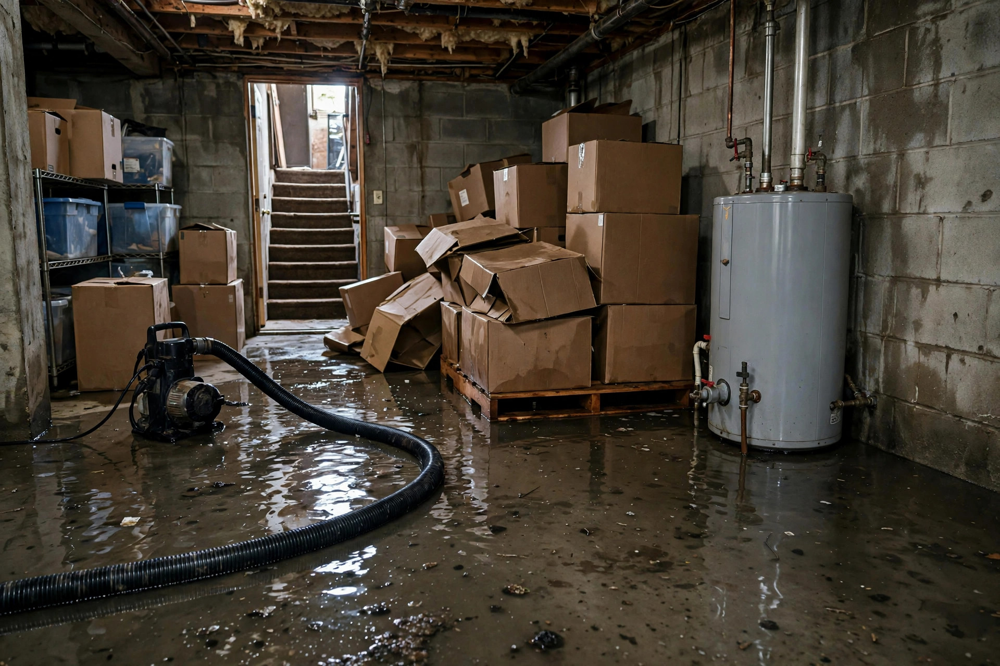

Flooded Basement Cleanup in Kuna, ID
Kuna's hardpan soil turns heavy rain and irrigation water into basement flooding — it sheets sideways instead of draining down. Whether it is groundwater pressure, a failed sump, or a burst line, cleanup means getting the water out, sanitizing what it touched, and drying the structure before mold takes the 24-hour opening.
Insurance and documentation
Basement floods generate claims. We build the file as we work so you are not reconstructing it later.
- Timestamped photos of water levels, affected areas, and damaged materials before anything moves
- Written moisture readings showing the extent of saturation
- Itemized list of removed materials with measurements
- Daily drying logs with equipment readings
- Source assessment noting the cause — burst, intrusion, backup, or appliance
Flood coverage varies widely by policy. Document first, argue coverage second — the file we build supports either outcome.
A spring flood
Typical scenario (illustrative example — not a past job)
After a week of rain, a Kuna homeowner finds two inches of water across the basement. The laterals are full, the hardpan is saturated, and water is seeping through the cove joint where wall meets slab. The crew pumps out, pulls the soaked carpet pad, flood-cuts the lower drywall, and runs drying for four days — then walks the homeowner through regrading the swale that funneled water to that wall.
Why basements flood here
- Hardpan lateral flow — rain and irrigation water travels along caliche to foundation walls
- Failed or missing sump pumps in below-grade spaces
- Window-well overflow during cloudbursts
- Water-heater and softener failures in basement utility areas
- Sewer backups during heavy storm loading
- Grading that slopes toward the house instead of away
Rebuild decisions
What usually stays
Concrete, framing, and masonry clean up well. Hard flooring like tile often survives with extraction and sanitizing. Most hard goods and furniture dry out fine.
What usually goes
Carpet pad, soaked drywall below the flood cut, wet insulation, and cardboard storage. These hold contamination and cannot be reliably sanitized.
What gets upgraded
Many homeowners use the rebuild to add a sump, seal the vapor barrier properly, or regrade outside — turning a flood into a one-time event.
What insurance wants
Photos before anything moves, a written moisture log, and itemized material lists. We document everything as we work.
Cleanup in order
Pump and extract
Submersible pumps handle deep water; weighted extraction wands pull the rest from carpet, concrete, and baseboard channels.
Triage materials
Pad and soaked drywall come out. Hard goods move to dry staging. Everything gets photographed for insurance.
Sanitize
Antimicrobial treatment on concrete, framing, and salvageable surfaces — floodwater is never assumed clean.
Structural drying
Dehumidifiers and air movers run until pin-meter readings confirm the slab, walls, and framing are dry.
From flooded to dry
Pump-out today, documented dry readings before we leave — and a plan so it does not repeat.
Open 24 hours · Kuna and the Treasure Valley